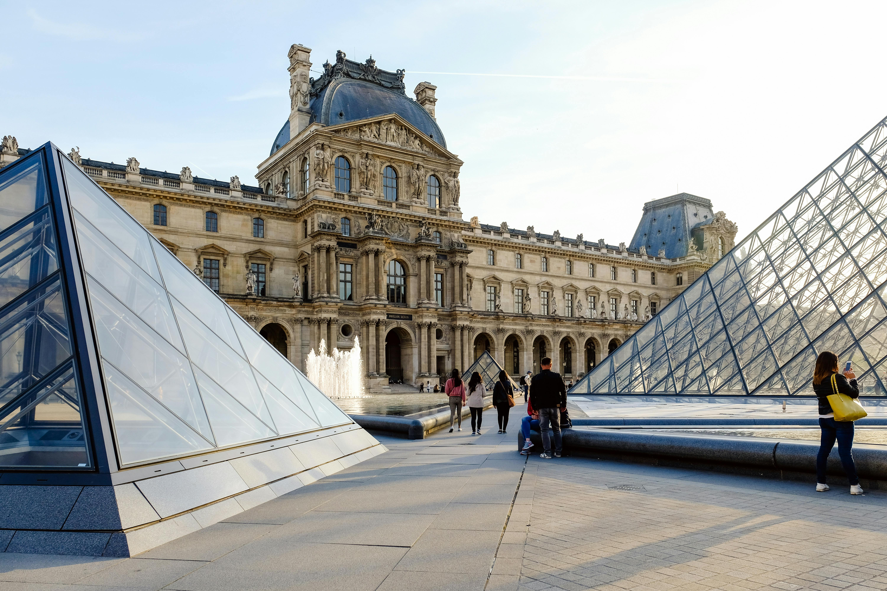

Why I love Traveling
Traveling is more than just moving from one place to another. It’s about discovery, growth, and perspective . I love traveling because it opens my eyes to the vast beauty of the world and reminds me that life is bigger than my everyday surroundings. Each new destination offers a fresh experience: the sounds of a local market, the taste of unfamiliar food, the warmth of people whose lives are so different from mine, yet somehow still connected.
I’m especially fascinated by how culture shapes people — the traditions, music, architecture, and even how a community shares meals. Traveling lets me experience these things firsthand. It pushes me out of my comfort zone, challenges my assumptions, and teaches me to appreciate both differences and similarities.
More than anything, travel gives me a sense of wonder. Whether it’s standing before a historic monument, walking through a quiet village, or watching the sunset over a new city skyline, I feel deeply alive when I explore new places. These moments become memories that last forever, and they shape the way I see the world and myself. That’s why I love traveling, and why I’ll always keep exploring.
I’ve always been fascinated by the beauty and diversity of our world. From ancient cities to tropical beaches, mountain peaks to cultural festivals and there’s so much I dream of exploring. This website is a glimpse into my travel bucket list, filled with places I hope to visit one day.
Whether you're a fellow traveler or just curious, I invite you to join me on this virtual journey around the globe. Let’s explore the wonders of the world together!
My Top 3 Destinations
-
Canada
Canada fascinates me with its breathtaking natural scenery, multicultural cities, and peaceful environment. From snow-covered mountains to vibrant cities like Toronto and Vancouver, Canada offers a perfect mix of adventure and calm. I’d love to experience its clean, wide streets and friendly people — and maybe catch a glimpse of the Northern Lights!
Places I’d like to visit in Canada:- CN Tower (Toronto)
A symbol of Canada’s modern skyline, the CN Tower offers breathtaking views of Toronto from above. It’s a must-see if you love cityscapes and tall landmarks. See images.
- Paris
Known as the “City of Light,” Paris is full of romance, history, and elegance. From world-famous landmarks to cozy cafés and stylish streets, there’s something magical about every corner. Whether it's enjoying French pastries or standing beneath the Eiffel Tower, Paris feels like a dream come to life.
Places I’d like to visit in Paris:- Eiffel Tower
- Louvre Museum
The Eiffel Tower is the most iconic symbol of Paris and one of the most visited landmarks in the world. Standing tall above the city, it offers stunning views, especially at night when it sparkles with lights. Whether you admire it from below or climb to the top, it’s a must-see. See the images below:
The Louvre is the world’s largest art museum and home to famous masterpieces like the Mona Lisa and the Venus de Milo. The building itself is beautiful — a mix of history and modern design with its glass pyramid entrance. It’s a paradise for art lovers. See the images below:

- South Africa
South Africa’s mix of wildlife, natural beauty, and rich history makes it an incredible destination. I’m curious about its vibrant cities like Cape Town, the history of Nelson Mandela, and its famous safaris. It feels like a place where nature and culture live side by side in a beautiful way.
Places I’d like to visit in South Africa:- Kruger National Park
One of Africa’s largest and most famous game reserves, Kruger National Park is a wildlife lover’s dream. It’s home to the Big Five — lions, elephants, leopards, rhinos, and buffalo — and offers unforgettable safari experiences. Seeing animals in their natural habitat here would be a once-in-a-lifetime adventure. See these images.


Travel Tips for First-Time Travelers
Traveling for the first time can be exciting and a little overwhelming, but with the right preparation, it becomes a smooth and fun experience. Here are some basic tips and items to pack before your trip:
Essential Travel Tips
- Always keep a copy of your passport and important documents (printed and digital).
- Do some research on your destination — know a few local phrases, laws, and customs.
- Keep your valuables close, especially in crowded places or airports.
- Have some local currency for emergencies, even if you plan to use cards.
- Stay hydrated and get enough rest — especially during long flights or busy tours.
Packing Checklist
- Travel documents (passport, visa, tickets)
- Phone and charger (plus a power bank)
- Clothes suitable for the weather
- Snacks, water bottle, and a travel pillow
- Travel adapter (especially for international trips)
Contact Me
Address: 12 Ferrari Street, Tabora - Accra
Email: samuelarmah817@gmail.com
Number: +233 550 345 163